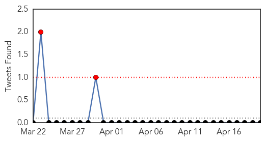

Pertussis
30-Day Web Trend
1 alerts, 0 warnings

30-Day Twitter Trend
0 alerts, 0 warnings

Article Locations

Article Confidences

Top Articles:
Top Tweets:
-
No tweets found for Apr 20, 2015
Measles
30-Day Web Trend
0 alerts, 0 warnings
30-Day Twitter Trend
2 alerts, 0 warnings

Article Locations
Article Confidences
Top Articles:
- 0.954
- Large measles outbreak traced to Disneyland is declared over
- 0.839
- No Jab No Play: Many disease deaths are preventable tragedies
- 0.792
- Medical Minute: Measles Outbreak Over
- 0.764
- Measles Gone! Or…No, They Are In Florida Now
- 0.739
- Protect your Child, Immunize!
- 0.526
- Azerbaijan marks European Immunization Week
Top Tweets:
-
No tweets found for Apr 20, 2015